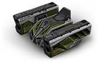

概括
作为一款出色的防御和支援武器，火箭炮因其主要功能而名副其实：
导弹发射。射弹具有类似于雷暴炮的溅射伤害机制，
以指数级增长的速度移动以瞄准他们的对手，而不是在按下空格键的那一刻撞击目标。
可以选择发射单发火箭来击中更快的目标，类似于镭射炮的街机模式工作，
或按住空格键来初始化激光瞄准系统。
目标必须保持在该激光的视线内，直到目标标线完全锁定，然后自动快速连续发射一组四枚导弹。
这种瞄准系统变体的好处是没有移动限制，这意味着可以同时驱动和锁定目标。
车库中的描述
中程导弹发射器。按住发射按钮将捕获一个目标并向敌人发射一连串导弹
自战争开始以来，对坦克的最大威胁是反坦克导弹。
那只野兽可以从很远的地方小心翼翼地将爆炸包传送到它的目标。
反坦克综合体“前锋”延续了百年传统，将快速爆炸运送到坦克及其装甲。
带有预装人工智能的目标捕获系统将使用光谱分析来在发射导弹时实现最大精度。
对于动态战斗，还包括直接射击火箭的选项。
坦克手们对这个装甲的微芯片盒并没有表现出太多的感情，
怀疑它实际上是一个清洁机器人的断头，它可以随时短路并决定从战斗中“清理”所有的坦克车。
装备改造
防御模块
射击效果
皮肤

火箭炮标准
火箭炮 XT
火箭炮超高